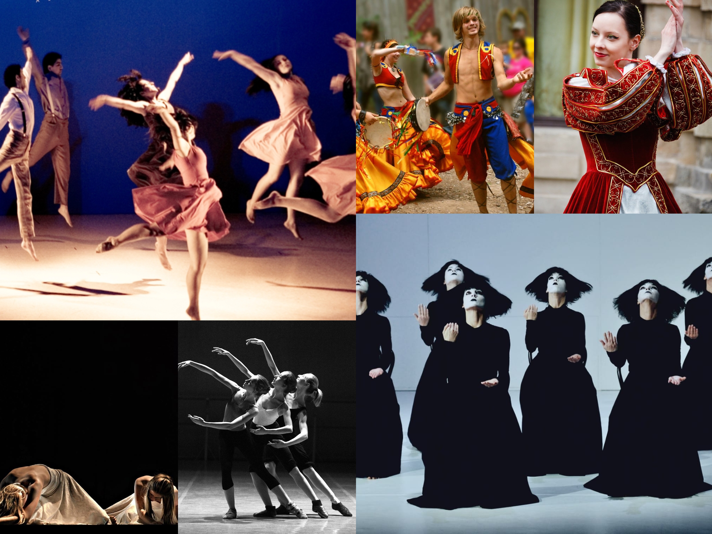

Welcome to my web page about Permorming Arts, a place where I will keeping information that I found interesting, necesary and helfull for a young artist, first of all we begging with...
What are the Performing Arts?
Well, performing arts involves the many artistic expressions that their exposition needs a stage. We see the paintings and sculptures in museums, scripts from different writters in their books, albums from our favorite singers or musicians in CD´s or Music Apps and also we can see those artists dancing, acting, relating a story with all their bodies on a theater.
Here we have a collage to demostrate a pretty litle part about how can be see the performing arts!
If you have something to tell me send me a message to: artists4ever@gmail.com